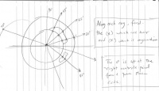
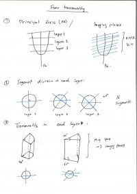
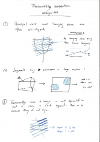
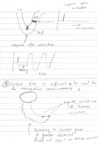

Regional cardiac function
From Rashed Karim Wiki
Measuring regional cardiac function
Tracking local wall deformation
- SQUEEZ (Stretch Quantifier for Endocardial Engraved Zones) from Purmorteza et al.
  Quantification strategy prior to principal axis integration
Quantification strategy prior to principal axis integration
Scar and transmurality metric
- CRT placement wants to avoid placing leads in places with scar and especially transmural scar.
- A scar burden (scar voxels / myocardium voxels) in each segment of the 17-segments.
 Principal axis integration
 Ambiguities in transmurality computation
Scar burden
- Segmenting scar using FWHM where the intensities are first normalized to blood-pool.
- FWHM starts with selection of hyper-enhanced myocardium.
- Scar burden computed on each segment
Transmurality metric
- Transmurality of 0-100% on each segment
- The quantification strategy is shown in the inset image
Integration of LV principal axis
- Integration: An illustration of how principal axis is used for computing LV segments and thus segments for transmurality (see inset image).
- Ambiguities: An illustration of some ambiguities in transmurality computations mainly due to mis-alignment of segment subdivision and imaging planes (see inset image)
Paper ideas
- It is not yet well clinically understood, the relation between transmurality of scar and latency in response after stimulation or activation.
- Whether transmurality can answer this question for the clinician: Does transmural scar, say 30%, have a very high or low latency in response following stimulation. If low, then a lead can be placed. If too high, a lead placement is not ideal.
- The latency can be measured using surface ECG, where the activation (spike) is recorded and then the response is recorded. Intra-cardiac measurements are not necessary as a simple engineering trick does the job from surface ECG. Instead of making a bi-polar recording, switch to uni-polar on surface ECG and measure the signal to recorder.
 Some ideas etched for a paper
Possible journals
Phantom validation for paper
[[File:Phantom for transmurality.png|500px]
Issue Logs
Installing MONACO
- Install Miniconda 3.3.0 which is a python distribution
- Install PyCharm 3.1.3
- Install Python OpenGL 3.1
- Install PyWin32 219

{kind=link}
{kind=link}
{kind=link}
{kind=link}